The Rosegarden Notation Challenge
Copyright © 2008 D. Michael McIntyre
This tutorial was written using a pre-release version of Rosegarden 1.7.0.
Let Rosegarden Help You Adapt Parts for Real Instruments
This is more of a footnote than something that really belongs here in the Notation Challenge, but I randomly stumbled across this example while I was hunting for something else. This file presents a great opportunity to play with one of 1.7.0's cooler features. I wrote the thing for Eriadain, an apparently abandoned attempt at remaking Ultima IX. It was intended to be computer game music, and I didn't give the slightest care to playability on real instruments.
It so happens that the flute part, in particular, is completely insane. Rosegarden has had a segment parameter preset database since I came up with the idea in 2006, but it was impossible to use it for situations like this, because they could only be used when creating future segments. Now in 1.7.0 it is finally possible to use them to help you sort out messes like this one.
So... Open the file and let's have a look at that flute part (open in a notation view, and scroll to bar 42):
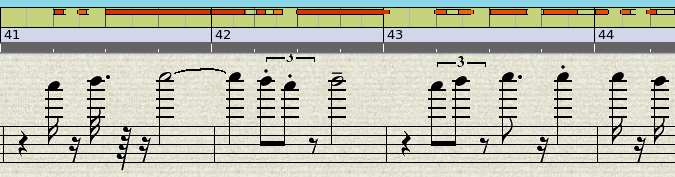
That looks really high. Is that playable? I play a flute, and I don't think that's playable unless maybe in the hands of some bleeding edge avant garde player using alternate fingering. But let's prove it. Go to Track Parameters, enable the Create segments with controls...
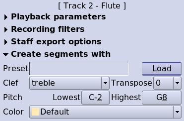
Then click the Load button, and dial up a flute:
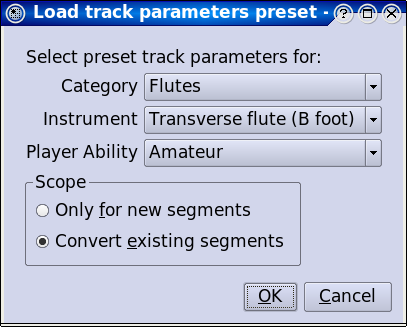
Pay special attention to make sure you and then go have another look in a notation view:
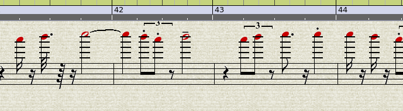
Ouch!
So what happens if we change this for a piccolo instead? Go back to the Load button and pick a piccolo. The notation view updates instantly, taking a new transposing clef, and we see that this part is well within the capabilities of that instrument.
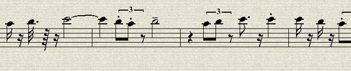
Now, how about the bassoon? Out of the box, it's hard to say. It looks like the part might be a little too low, but I don't play bassoon.
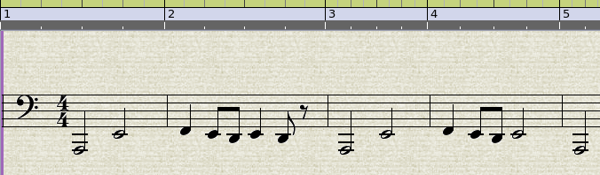
Rosegarden says yes, that's right. It's a little too low. Either this part comes up, or it has to be aimed at a contrabassoon instead.
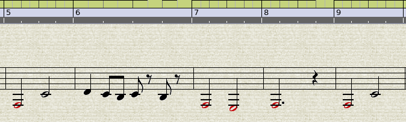
Changing to a contrabassoon is as easy as picking something else off the Load button, but let's be realistic. It's hard enough to get somebody to play your work (if you were eating on what you make as a composer, you probably wouldn't be using Rosegarden after all!) and a cheap student contrabassoon is over $8,000. Ouch. If you don't know someone, who has one of these monsters in the closet somewhere, you are probably best off to transpose the entire piece to a key that puts these bassoon notes in line.
Back up to the beginning, and Segment -> Add Key Change...
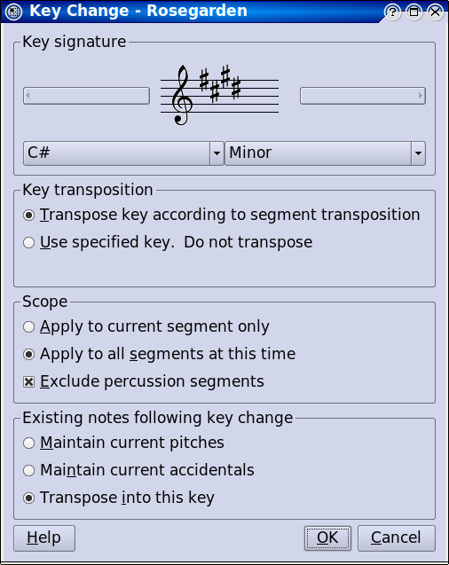
Take special note of all three options sections, because we want this key change in all non-percussion segments at this time, and we want to transpose everything into this key.
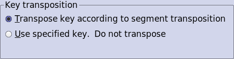
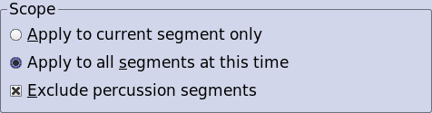

It turns out that going to four sharps still didn't do the trick.
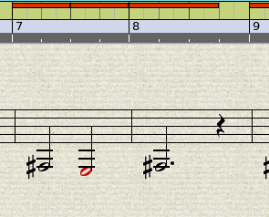
Normal humans hate to play in more than four sharps, so what if we go to four flats? Now that there is a key change present, you can go back and double click on it for a different version of the dialog.
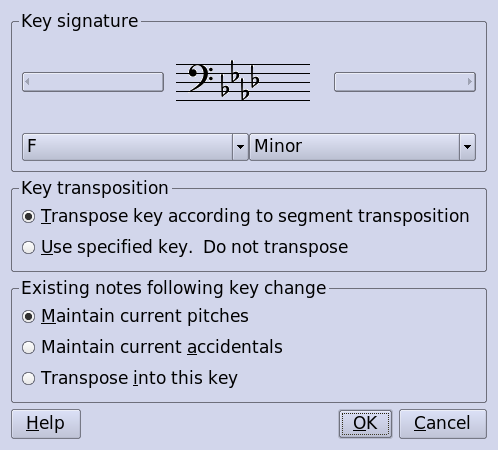
As it happens, I never found a key that made me happy, and I am now officially bored with this example. You get the idea though. Have fun!